Návrhy webu Privát Glončák
Šesť rôznych smerov hlavnej stránky, z toho dva v modernom štýle (E a F). Všetky používajú vaše fotky (len s upraveným svetlom a farbami), rovnaké overené údaje z inzerátu a rovnaký ukážkový rezervačný formulár s kalendárom a výpočtom ceny.
Kliknite na náhľad. Každý návrh funguje aj na mobile, skúste zúžiť okno prehliadača.
-
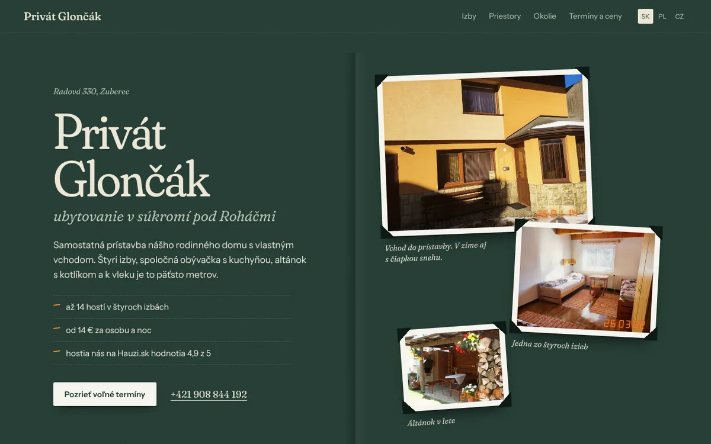
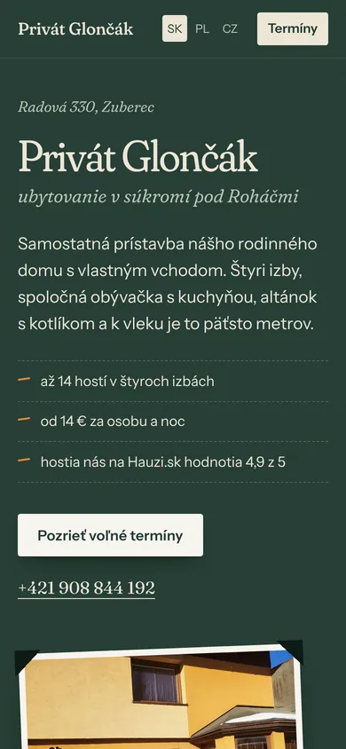
-
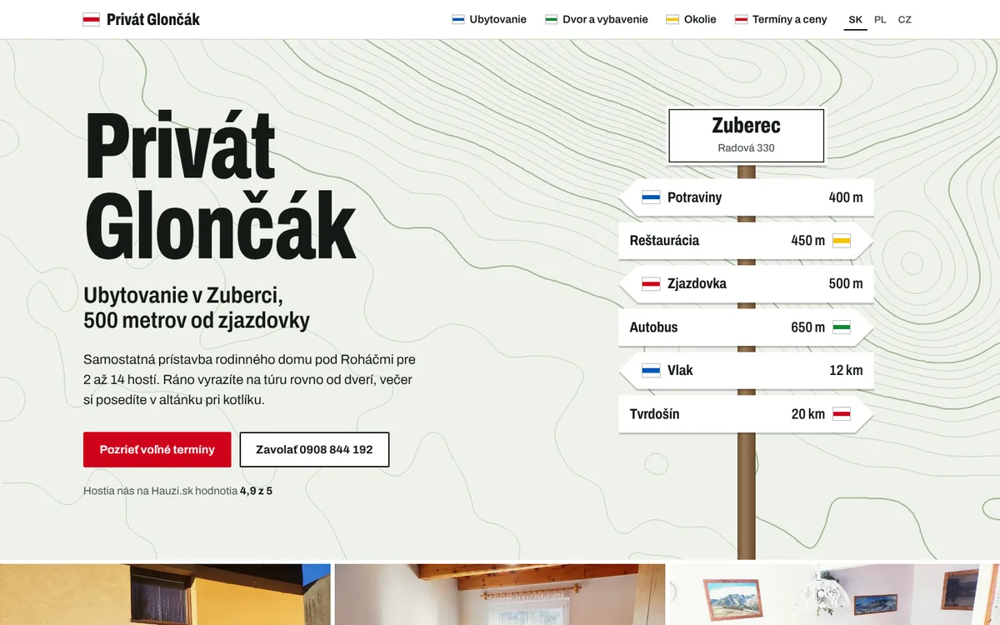
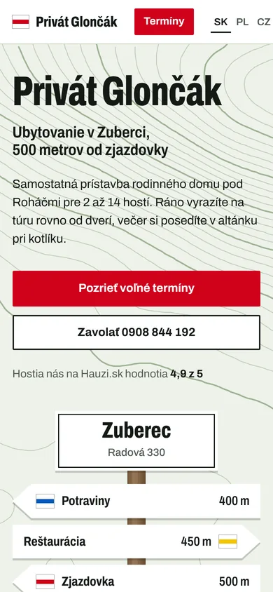
-
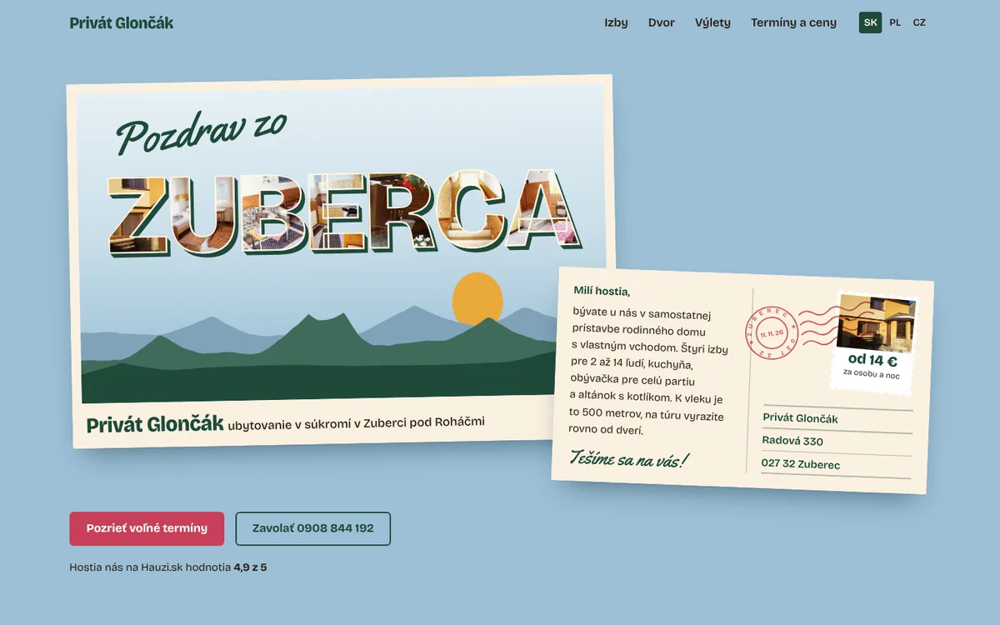
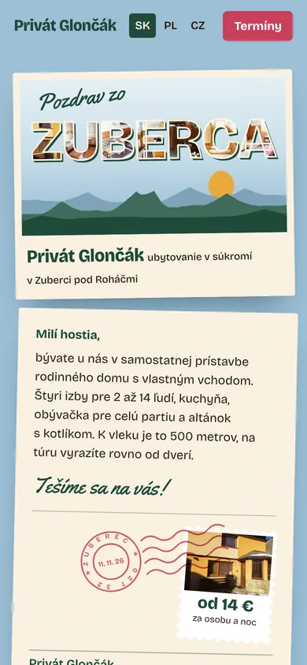
-
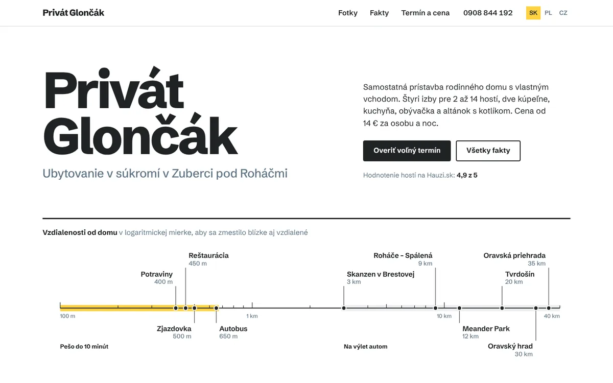
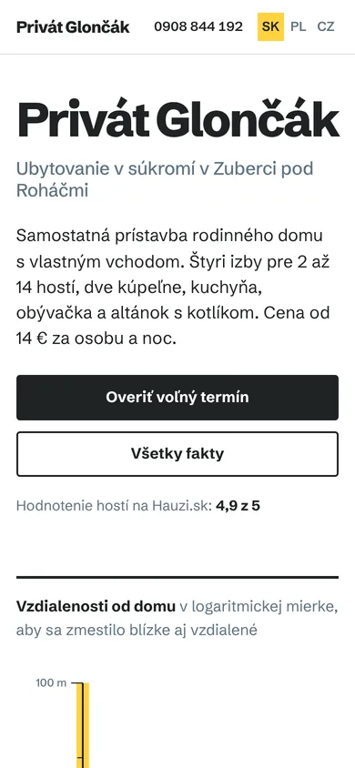
-
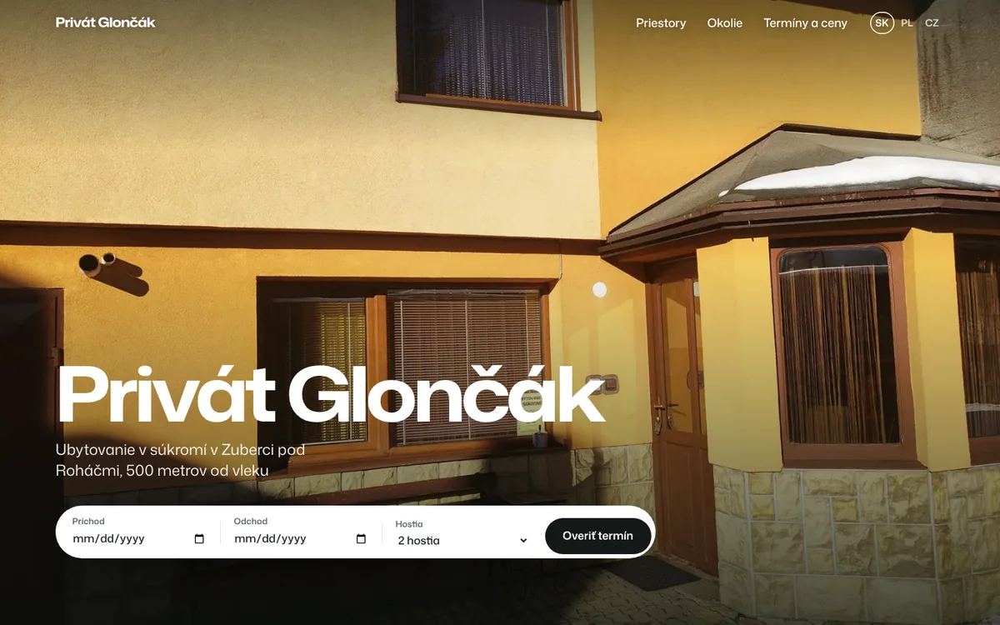
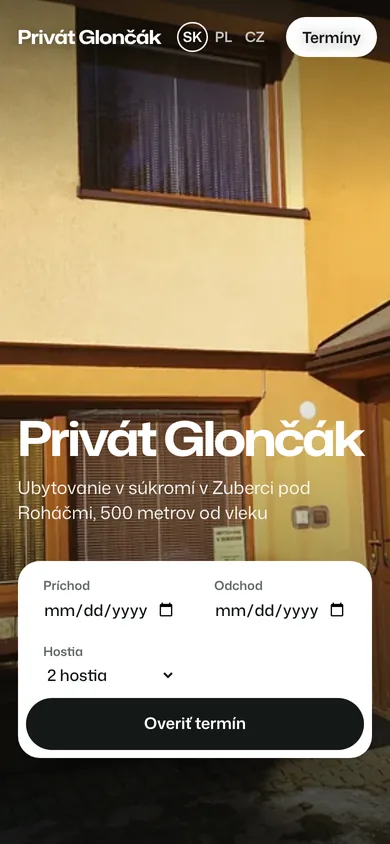
-
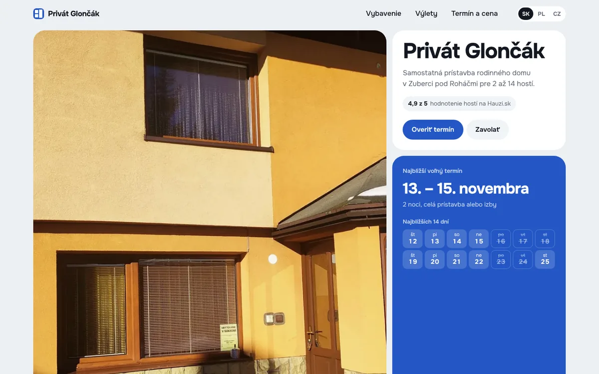
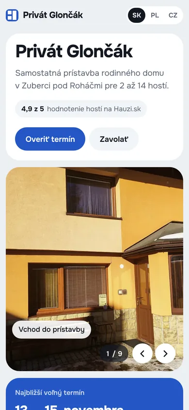
Čo je len ukážka
- ceny (14 € za osobu a noc, celý dom min. 8 osôb, záloha 30 %)
- obsadené dni v kalendári
- dátumy na fotkách v návrhu A, najbližší voľný termín v návrhu F
- formulár nič neodosiela, prepínač jazykov zatiaľ nefunguje
Čo treba ešte overiť
- vybavenie kuchyne a izieb, počet parkovacích miest
- či je trampolína a lyžiareň aj v zime
- hodnotenie 4,9 z 5 z Hauzi.sk pred spustením
- či môžeme ukázať obraz Roháčov z obývačky (návrh A)
Ako vybrať
- napíšte písmeno návrhu, ktorý sa vám páči najviac
- pokojne aj to, čo by ste z iných návrhov pridali
- vybraný smer potom dotiahnem do celého webu aj administrácie